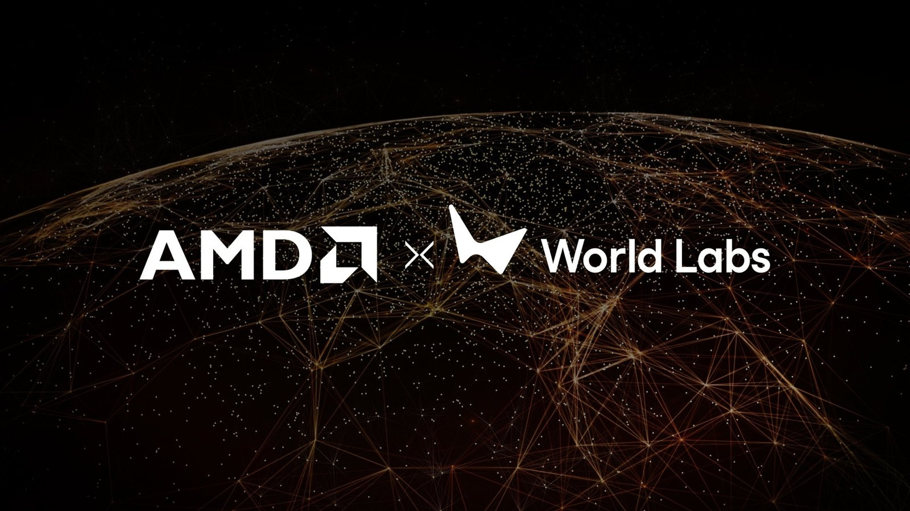
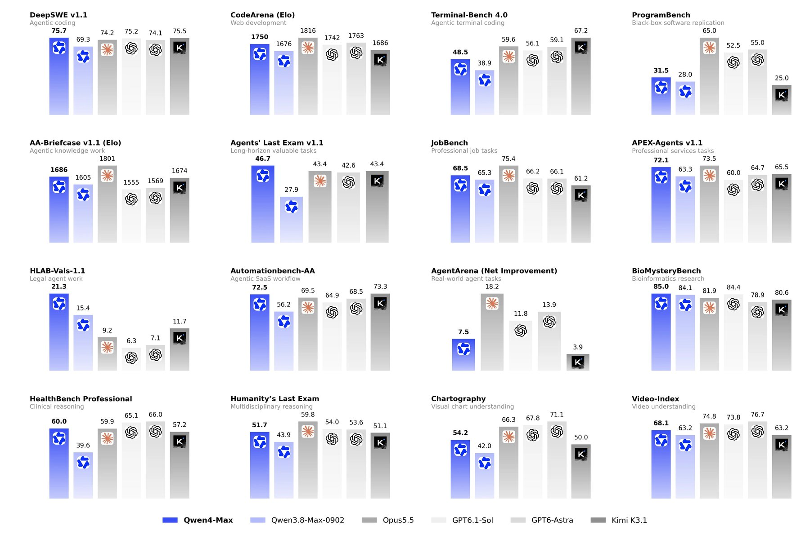
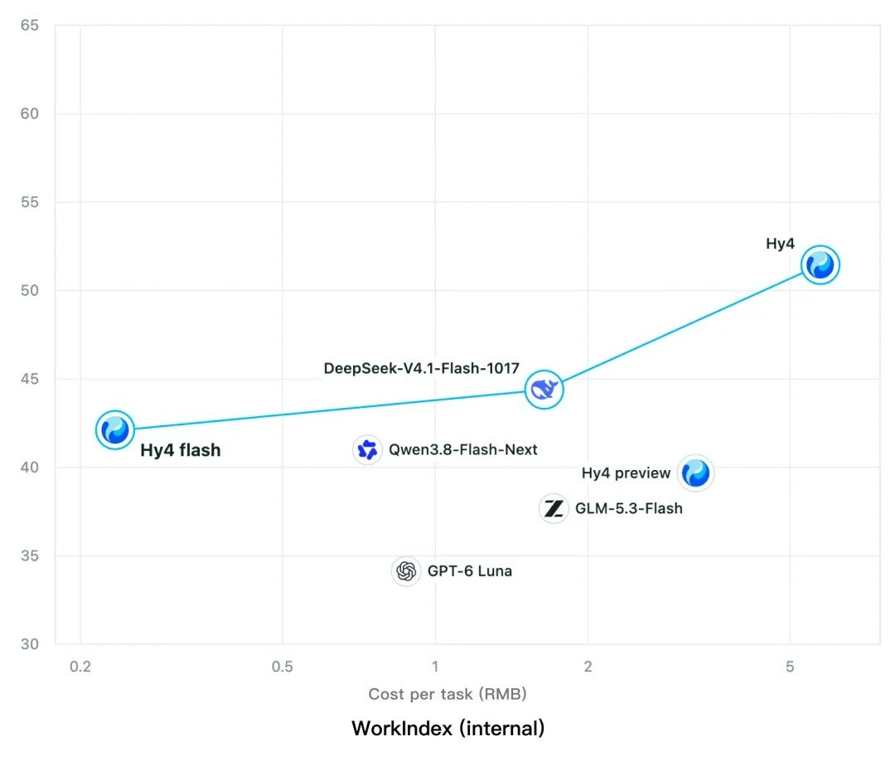
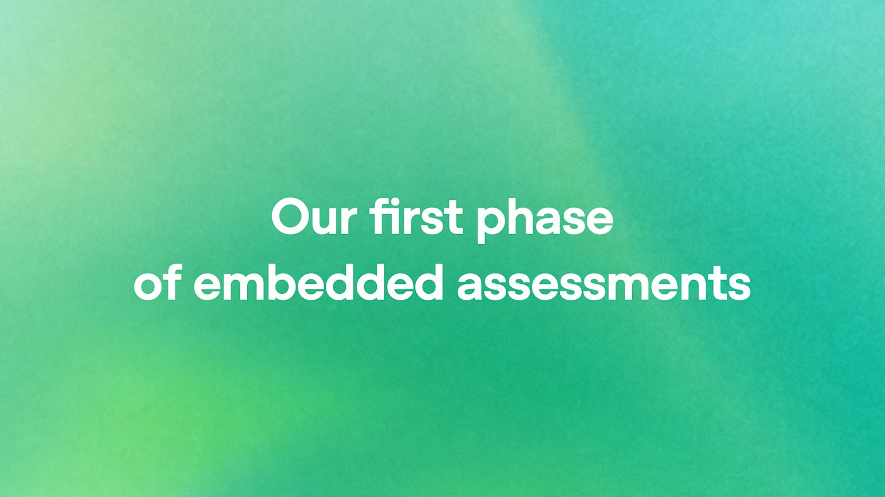

2026 · 星期一 AIHOT × X × WaytoAGI × 官方 × 媒体
11/ 16
AI 早报
窗口：北京时间 2026-11-16 00:00–24:00（UTC 2026-11-15T16:00:00Z–2026-11-16T16:00:00Z）
主线 1 2 3 4 5 6 7 8 今日一句话 11 月 16 日的主轴是AMD 完成对 World Labs 的收购，与阿里、腾讯同一天放出新模型 ：AMD Newsroom 与 Form 8-K/A 于当天公布交易已完成（交割日为 11 月 13 日 ），向 World Labs 原股东发行 14,978,322 股普通股；这笔全股票交易在 9 月 28 日宣布时作价约 82 亿美元 ，李飞飞出任 AMD 执行副总裁兼首席科学家，向苏姿丰汇报。模型侧，阿里云新闻稿与 @Alibaba_Qwen 正式发布 Qwen4-Max（总参 2.4 万亿 、每 token 激活 710 亿 ，原生视觉与 100 万 tokens 上下文，输入 $1.50 / 输出 $4.50 /百万 tokens），腾讯混元推出面向日常任务的 Hy4 flash（总参 224B / 激活 12B ）。监管侧，美国商务部 BIS 发布临时最终规则，限制通过第三国数据中心向 Country Group D:5 或澳门企业远程提供超过 1,200 万 aggregate TPP 的先进算力。
主线 8 条 01 产业 头条 未证实项
AMD 宣布完成收购 World Labs：发行 14,978,322 股，李飞飞出任执行副总裁兼首席科学家 11-16 22:29 北京时间 窗口内完成交割的公告 · Newsroom 署 November 16 · @LisaSu 14:29:34Z 独立来源 3 家

AMD 与 World Labs 标识合成视觉（图片来源：AMD Newsroom og:image）
介绍
AMD Newsroom（Published November 16, 2026）宣布完成对 World Labs 的收购，把模型研究团队并入其 AI 栈，以共同塑造面向开放生态的下一代硬件、软件与系统。新闻稿写明，李飞飞出任 AMD 执行副总裁兼首席科学家，直接向董事长兼 CEO 苏姿丰汇报；World Labs 继续做基础模型研究，并与 AMD 工程师合作，把新兴模型能力反馈到未来的 AI 基础设施。苏姿丰在 14:29:34Z（北京 22:29）发帖欢迎 @drfeifei 与 @theworldlabs 团队加入 @AMD；李飞飞于 14:44:30Z 回复感谢，称整个 World Labs 团队「beyond excited」。同日提交的 Form 8-K/A 则补充了交割的股份数字。
为什么重要
这是窗内体量最大的产业落地：9 月 28 日已宣布的约 82 亿美元全股票交易，在 11 月 13 日交割、16 日对外确认完成，并把空间智能与机器人仿真团队直接接到 AMD 的芯片与系统路线图上。上期周末合刊写的是 World Labs 向所有人开放 Atlas，不把本次完成交割当成同一条新闻重复。公告与 8-K 均未在完成稿中重报交易对价的最终调整结果，对价仍以 9 月协议中的约 82 亿美元（subject to adjustment）表述，避免把发行股数自行换算成新的成交金额。
要点
交割与股份（Form 8-K/A，公布于 November 16） ：公司写明，收购交割发生在 2026 年 11 月 13 日 ，向 World Labs 原股东合计发行 14,978,322 股普通股。股份数量按交割日前第二至第十一个交易日的纳斯达克成交量加权均价计算，因此 9 月首次 8-K 时尚未确定。交易背景（8-K/A 回溯 9 月 26/28 日协议，非窗内新宣布） ：合并协议于 9 月 26 日 签署，收购 World Labs 全部股权，总对价约为 82 亿美元 、以普通股支付，并可调整。9 月 28 日的收购宣布本身已是旧闻，本期只把它当作完成交割的背景，不升作新头条。人事与业务（Newsroom，Nov. 16） ：李飞飞出任执行副总裁兼首席科学家，直接向苏姿丰汇报。新闻稿称 World Labs 开发可创建并模拟交互式 3D 环境的模型，以及用于机器人学习与仿真的技术；团队将继续推进基础模型研究，并与 AMD 工程师合作。窗内官方表态（X） ：@LisaSu 于 14:29:34Z （北京 22:29 ）发帖欢迎李飞飞与 World Labs 团队加入 AMD（2,249 赞 / 81 条回复 / 105 次收藏）。@drfeifei 于 14:44:30Z 引用感谢。World Labs 官方账号随后在北京时间 11-17 01:13 左右的确认帖已超出本期窗口，不作为窗内一手来源。⚠ 9 月 28 日的收购宣布与约 82 亿美元对价是旧闻，本期只写 11 月 16 日的完成公告与 8-K/A 股份数字。
⚠ 新闻稿与 8-K/A 均未给出按发行股数重算后的最终美元对价，不用自行换算。
02 模型 未证实项
阿里正式发布 Qwen4-Max：总参 2.4 万亿、激活 710 亿，1M 上下文，输入 $1.50 / 输出 $4.50 /百万 tokens 11-16 10:01 北京时间 正式发布 · @Alibaba_Qwen 02:01:55Z / 北京 10:01 · 阿里云新闻稿 November 16 独立来源 5 家

Qwen 官方发布图：Qwen4-Max 与 Qwen3.8-Max、Opus 5.5、GPT-6.1 Sol、GPT-6 Astra、Kimi K3.1 的 16 项对比（图片来源：@Alibaba_Qwen 发布帖配图）
介绍
阿里云新闻稿（Hangzhou, China, November 16, 2026）与 @Alibaba_Qwen 于 02:01:55Z（北京 10:01）的长帖同步宣布，Qwen 家族目前最强的 Qwen4-Max 正式上线。官方表述为新的稀疏 MoE 架构，总参 2.4 万亿 、每 token 只激活 710 亿 （新闻稿称比同为 2.4T 规模的 Qwen3.8-Max 少激活 25%），具备原生视觉能力与 100 万 tokens 上下文。API 已在 QwenCloud 上线，也可在 Qwen Studio、QwenWork、Qoder 使用；官方长帖写明定价为输入每百万 tokens $1.50 、输出 $4.50 、隐式缓存 $0.075 （较 Qwen3.8-Max 的缓存价下降 70%）。预览版曾在 11 月 11 日左右接入部分阿里产品，本期此前各期未单列，现按正式发布写入主线。
为什么重要
这是窗内最完整的旗舰模型发布：官方同时给出架构规模、定价和自家 Work360 成本对比，第三方 Artificial Analysis 与 Arena 也在同一上午给出独立分数。必须把阿里内部评估、AA 的 Intelligence Index、以及 Arena 排位分开写，避免把不同口径捏成一个「登顶」数字。官方长帖和新闻稿都未写 N-gram Embedding 的额外参数量，相关 328B 仅见于媒体对官博的转述，本期不以该数字作为已核对事实。
要点
官方规模与定价（阿里云新闻稿 + @Alibaba_Qwen 02:01:55Z） ：总参 2.4 万亿 ，每 token 激活 710 亿 ；原生视觉、1M 上下文。输入 $1.50 / 百万 tokens，输出 $4.50 / 百万 tokens，隐式缓存 $0.075 / 百万 tokens。官方称内部评估中平均单任务成本下降超过 60% ；后续帖补充 Work360 上 token 用量约降 24% （Xhigh）和 35% （High），Terminal-Bench 4.0 约降 48% 和 49% ，Work360 平均单任务成本从 $4.43 降至 $1.67 。新闻稿还写明将很快放出更小规模的 Qwen4 开源权重。第三方评测（@ArtificialAnlys 02:55:35Z） ：在 Artificial Analysis Intelligence Index 的 xhigh 档，Qwen4 Max 得 43 分，较 Qwen3.8 Max 高 9 分，比 Kimi K3.1 Pro 低 3 分；AA 称其每任务成本约 $3.27 ，比 Qwen3.8 Max 的 $10.02 低 67% ，也低于 Kimi K3.1 Pro（max，$3.68 ）。后续帖称每任务输出 token 约少 39% （约 105k 对 171k）。这是 AA 口径，不是阿里内部 Work360。Arena 与官方榜位 ：@Alibaba_Qwen 引用 @arena 称，Qwen4-Max 在 Agent Arena 上较 Qwen3.8-Max 净提升 +7.5% ，使 Alibaba 成为总榜第 5 的实验室；在 Code Arena: WebDev 排名第 6 （较上一代升 74 分）。阿里云新闻稿也写明它在 Code Arena 排第 6。能力边界（官方对比图，须对照阅读） ：官方 16 项对比图显示，Qwen4-Max 在 HLAB-Vals-1.1、Agents' Last Exam v1.1、BioMysteryBench、DeepSWE v1.1 等项领先或接近领先，但在 ProgramBench、Terminal-Bench 4.0、Chartography 等项明显落后于 Opus 5.5 或 Kimi K3.1。这些分数来自官方配图，不是第三方复现。⚠ 11 月 11 日左右的预览接入不是本期首次发生，但此前各期未单列，现按 11-16 正式发布写入主线。
⚠ 官方长帖、阿里云新闻稿均未写 328B N-gram Embedding；该数字仅见于媒体转述，不用。
⚠ qwen.ai 官博为前端渲染，本期未抓到完整正文，关键数字以阿里云新闻稿和官方 X 长帖为准。
03 模型 未证实项
腾讯混元发布 Hy4 flash：总参 224B、激活 12B，官方 WorkIndex 单任务成本约为 Hy4 的 1/20 11-16 12:29 北京时间 窗内首发 · AIHOT 一手 11-16 12:29 · IT之家 13:09 转述官方说明 独立来源 3 家

官方 WorkIndex（internal）成本–效果示意：Hy4 flash 单任务成本明显低于 Hy4（图片来源：IT之家转载的官方图）
介绍
腾讯混元于 11 月 16 日推出 Hy4 flash，官方将其定位为迄今性价比最高的 Hy 模型。IT之家（13:09:25）转述官方说明：总参数 224B （其中含 64B Engram 参数），每 token 激活 12B ，支持多模态输入与 100 万 token 上下文。混元研究页是官方一手出处，但该页为前端渲染，本期静态抓取只拿到骨架；以下参数、成本倍数与上线范围，以 IT之家对官方说明的转述，以及 AIHOT 将其标为「一手」的研究页条目交叉核对。
为什么重要
同一天里，腾讯用一个更小激活、明确面向日常办公的 Flash 档，去切「够用且更便宜」的市场，并宣布将在 WorkBuddy 限时免费、TokenHub 限时五折。数字必须用官方口径的 WorkIndex 倍数，而不是把媒体标题里的「约 5%」和盲测「接近 Haiku 5.5」写成已复现的公榜成绩。
要点
规模（IT之家转述官方说明，13:09） ：总参 224B （含 64B Engram），激活 12B ，多模态，1M 上下文。预训练引入混合注意力、LatentMoE 与 Engram；官方称 KV cache 大小降至 Hy3 的 1/24 、Hy4 的 1/6 。后训练经强化学习把端到端任务输出长度压缩 50% ；推理侧解码速度超过 150 tps 。官方成本口径（WorkIndex） ：在基于 WorkBuddy 典型任务的内部评测集 WorkIndex 上，官方称 Hy4 flash 单任务成本仅为 Hy4 preview 的 1/13 、Hy4 的 1/20 ，以及 DeepSeek-V4.1-Flash-1017（max 档、忙时价格）的 1/8 。综合效果「略优于 Hy4 preview」。IT之家标题中的「约 Hy4 的 5%」与 1/20 一致，这是官方内部集，不是公开榜。盲测与上线 ：IT之家称，腾讯邀请 85 位 WorkBuddy 内部用户，在 27 类共 259 个日常任务上做盲测，结果是用户满意度接近 Claude Haiku 5.5，单任务成本显著低于参与对比的模型，任务时长也最短。模型已上线腾讯云 TokenHub、WorkBuddy、元宝、企业微信、QQ、ima、Marvis 等；11 月 30 日 前 WorkBuddy 限时免费，TokenHub API 限时五折。官方表示计划开源并高频迭代。价格表的核对说明 ：AIHOT 对混元研究页的一手摘要，以及对该官方页的检索摘录，列出每百万 tokens 价格为缓存命中 0.02 元 、输入 0.5 元 、输出 2 元 （对比 Hy4 的 0.3 / 6 / 18 元）。IT之家正文确认「API 价格较 Hy4 大幅降低」，但没有写出这张表。因研究页正文未保存到本地，这组人民币标价暂按一手摘要采用，并在此注明。⚠ 混元研究页为前端渲染，正文未能静态保存；224B / 12B / WorkIndex 倍数已与 IT之家交叉，人民币单价表仅见于 AIHOT 一手摘要与官方页检索摘录，已在要点中说明。
⚠ 盲测是 85 名 WorkBuddy 内部用户，不是公开对决榜；「接近 Haiku 5.5」按 IT之家转述采用，不用未在该文出现的「18 倍」说法。
04 监管 未证实项
美国商务部 BIS 发布临时最终规则：限制经第三国数据中心远程获取先进算力 11-16 北京时间 官方新闻稿 FOR IMMEDIATE RELEASE November 16 · 规则文本 RIN 0694-AK50 同步公布 独立来源 3 家
媒体配图：美国商务部相关画面（图片来源：TechCrunch）
介绍
美国商务部工业与安全局（BIS）于 11 月 16 日发布新闻稿，宣布一项由财政部与国家安全委员会指示起草的临时最终规则（IFR），以堵住通过第三国数据中心远程调用先进超级智能（SI）芯片与服务器、从而绕开现有出口管制的路径。新闻稿未展开具体阈值；同期公布的规则文本（RIN 0694-AK50）写明：若数据中心（含通过网络连接的「linked data centers」）向总部或最终母公司位于澳门或 Country Group D:5 的企业提供超过 12,000,000 「aggregate TPP」的算力，相关物项向全球任何目的地的出口、再出口或国内转移都可能需要许可。
为什么重要
这是把「芯片不能运到受限制实体」扩展到「也不能在第三国机房里远程租到同等算力」。对云厂商、跨国数据中心和芯片出口商都增加了客户尽职调查负担。规则文本里的生效日仍是占位符「联邦公报公布之日」，不能把新闻稿当天写成已经起算 90 天宽限期。
要点
远程访问门槛（规则文本） ：禁止在知情的情况下，向将为澳门或 D:5 目的地企业提供超过 12,000,000 aggregate TPP 远程算力的数据中心（可跨多个「linked data centers」累计）出口、再出口或在国内转移所管制物项。商业推荐系统（如电商或社交媒体用于排序的系统）不适用该许可要求。已有业务的 90 天窗口 ：规则文本写明，在规则公布日之前已向上述企业提供相应算力的数据中心，如需继续提供，必须在 IFR 生效日起 90 天 内取得许可，否则将面临后续出口限制。生效日在展示文本中仍为「[INSERT DATE OF PUBLICATION IN THE FEDERAL REGISTER]」，本期不以 11 月 16 日新闻稿当天作为起算日。五个目的地的额外许可 ：除现有先进芯片许可外，向印度尼西亚、马来西亚、新加坡、泰国或巴西（以及商务部长与国务卿或总统国家安全事务助理磋商后指定的其他国家）出口、再出口或在国内转移先进半导体也需要许可。规则称这些国家有更高的转口风险；若最终用户或其最终母公司总部位于美国，并满足报告要求，则该五国许可要求不适用。其他 ：规则还调整了前端晶圆厂与封测厂在出口先进制程逻辑芯片时的推定，并正式废止已于 2025 年 5 月宣布不再执行的拜登时期 AI Diffusion Rule。TechCrunch 将 1,200 万 TPP 约合为约 750 颗 H100/H200 的换算，不见于本期打开的官方文本，不用。⚠ 规则展示文本的生效日仍是联邦公报公布日占位符，不以新闻稿当天作为 90 天起算日。
⚠ TechCrunch 把 1,200 万 TPP 约合为约 750 颗 H100/H200，官方文本未见该换算，不用。
05 安全 未证实项
OpenAI 与 Apollo Research、METR、Transluce、Goodfire 签约启动首阶段嵌入式安全评估 11-16 北京时间 官博署 November 16 · AIHOT 记 11-16 16:00 独立来源 2 家

OpenAI 博文分享图（图片来源：OpenAI 官博 og:image）
介绍
OpenAI 官博（November 16, 2026）宣布，已与四家独立评估方——Apollo Research、METR、Transluce 和 Goodfire——签署协议，启动首阶段「嵌入式评估」（embedded assessments）。官博写明，评估方将在较长时间里深入接触内部模型与系统，以评估模型对齐情况和安全保障是否有效；按各评估所需，可获得与 OpenAI 研究者相同的部分内部资源，包括模型检查点、源代码、训练与评估数据、监控系统、技术文档，以及与相关研究者、工程师的讨论。
为什么重要
这是把第三方评估从「测已发布模型」推进到「在训练和内部使用阶段就进实验室」。对公开透明度有帮助，但也要看官博自己写明的限度：敏感 IP 可用「与 OpenAI 研究者一起跑分析」代替直接接触权重，评估方若需接触机密须在 OpenAI 办公室使用公司设备，且 OpenAI 保留对机密信息的删改权和负责任披露延迟。
要点
四家评估方的分工（官博） ：Apollo 将分两阶段评估模型是否会隐蔽地违背开发者意图，以及现有保障能否发现这种行为，并列出四项主张（训练未激励颠覆、强评估与红队无法引出、内部使用中未尝试、颠覆推理可被发现）。Goodfire 将嵌入可解释性研究者，以训练过程监控、调试与对齐为主，主要服务内部研究者，同时计划公开阶段性发现。METR 拟做两项：对齐评估聚焦「迄今最大的强化学习训练」，以及另一项监控评估（范围仍待双方商定）。Transluce 先评估发布后对齐评测的质量与覆盖，并打算在 2027 年初再做约 八周 的后续评估。访问与发表规则 ：需要接触敏感机密的评估方须在 OpenAI 办公室、使用公司设备工作。员工访谈默认不公开发表、不具名；评估方可走另行「公司背书陈述」路径。评估方在发表上保持独立，但 OpenAI 保留对机密信息的删改权，也可要求为修复安全问题而延迟披露。Safety and Security Committee（OpenAI Foundation 董事会下的独立监督委员会）将获得未删节报告，并可与评估方私下沟通。报酬披露（官博脚注） ：Apollo 与 Goodfire 接受劳务报酬，但报酬不与评估结论挂钩；METR 与 Transluce 不接受评估劳务报酬，但可接受评估所需的 API 额度或算力。官博称这些安排仍要公开说明。该工作也被写明用于履行白宫 Super Intelligence 协议中关于独立评估安全控制的承诺。⚠ 本期未检索到 OpenAI 官方账号在窗口内转发该博文；第二条独立来源为 AIHOT。
06 行业 未证实项
Hugging Face 将语言模型 Inference Providers 路由切换至 OpenRouter 11-16 北京时间 官博署 Published November 16, 2026 独立来源 2 家
Hugging Face 与 OpenRouter 合作博文分享图（图片来源：Hugging Face 官博 og:image）
介绍
Hugging Face 官博（Published November 16, 2026）宣布，与 OpenRouter 合作，把面向语言模型的 Inference Providers 从自有路由切换到 OpenRouter：请求按实时价格、速度和可靠性选择 provider，若第一个失败会在同一次调用里改试其他 provider，调用代码不用改。图像、视频和音频生成仍走 Hugging Face 原有 Inference Providers，不经过 OpenRouter。定价不变——按 provider 原价计入 Hugging Face 账单，官方称不在其上加价。
为什么重要
开源权重模型已经占 OpenRouter 流量的大部分，Hugging Face 把「模型卡片上的一键推理」直接接到这套路由，等于把 Hub 上的模型和多家推理供应商更紧地捆在一起。对用户的实质变化是失败自动改道，以及不能再在语言模型请求里使用自己的 provider API key。
要点
官博给出的行业数字（OpenRouter，October 2026） ：开源权重模型在 OpenRouter 上的 token 占比从 2025 年 10 月的 26.8% 升至 2026 年 9 月底的 71.7% ，7 月曾到 77.5% ；同期开源权重周用量增长超过 60 倍，闭源约为 10 倍。官博称「本周」OpenRouter 上用量最大的模型是开源权重的 DeepSeek V4.1 Flash 1017，为 59.2 万亿 tokens。开源权重平均成本约低四倍：输入 $0.28 / 百万 tokens、输出 $1.62 ，对应闭源 $1.27 / $6.36 。路由效果（OpenRouter 自身测量） ：官博称 OpenRouter 每月服务超过 800 万亿 tokens、服务 1,000 万 以上用户，覆盖 80 多家 provider 的 600 余个模型。新路由不再只看最低标价，而是综合价格、速度和可靠性；官方引用的测量是容量错误下降 46% ，首 token 时间改善 16.9% ，吞吐改善 16.3% 。兼容与破坏性变更 ：路由支持 OpenAI Chat Completions / Responses 以及 Anthropic Messages。用户仍可用 model:fastest、:cheapest 或 :provider 后缀指定策略。PRO 用户每月有 $2 推理积分，Team / Enterprise 为每席 $2 。破坏性变更：语言模型请求改为走 OpenRouter 并计入 Hugging Face 账单，不能再在这些请求上使用自己的 provider API key；图像和视频的自定义密钥仍可用。⚠ 窗口内 from:huggingface 检索为 0 条原创帖；第二条独立来源为 AIHOT。
⚠ 开源占比、800 万亿 tokens 等数字来自官博对 OpenRouter 数据的引用，不是 Hugging Face 自有流量统计。
07 安全 未证实项
Anthropic 缩短协同漏洞披露时限：高危与严重漏洞由 90 天改为 30 天 11-16 00:00 北京时间 官博署 Nov 16, 2026 · AIHOT 记 11-16 00:00（窗口起点） 独立来源 2 家
Anthropic 协同漏洞披露政策博文分享图（图片来源：Anthropic 官博 og:image）
介绍
Anthropic Frontier Red Team 在 11 月 16 日的博文中宣布，调整协同漏洞披露（CVD）时限：高危与严重漏洞的披露窗口从 90 天 缩短为 30 天 ，其余问题改为 45 天 。新时限适用于 2027 年 1 月 1 日 及以后向厂商和维护者报告的漏洞；该日之前仍在进行的报告维持原有截止日期。官博解释，前沿模型发现漏洞的速度已经改变了原有假设——补丁不再只按「人的速度」推进，同一漏洞被其他模型再次发现的可能性也在上升。
为什么重要
这是把披露节奏对准「模型会互相撞上同一漏洞」的现实，对开源维护者压力更大。官方同时把升级外部协调者、补丁后的技术细节公开，以及一批已超过现行 90 天时限、尚未公开的高危报告，一并写入新日程，避免只看到「30 天」而忽略生效日和例外。
要点
新时限（官博） ：高危 / 严重 90→30 天 ，其余 45 天 ，自 2027 年 1 月 1 日 起新报告适用。若维护者在 15 天 内（原为 30 天）未回应首次报告，将升级到外部漏洞协调者。补丁可用后，完整技术细节的等待期从 45 天 改为 30 天 。正在利用中的漏洞仍维持 7 天 披露窗口，这一条没有改。已超期的存量报告 ：官博称，有一批高危与严重漏洞在现行 90 天政策下已经超期、但尚未公开。Anthropic 正在通知这些项目的维护者，再给 30 天 ；之后将按更新后的政策，从 2027 年 1 月 1 日 起把这些报告公布到其 dashboard。例外与配套 ：关键基础设施等难以快速修复、或需要改规范 / RFC 的缺陷，仍可与厂商商定补救时间表。未经人工审阅的 AI 发现（例如 OSS Scanner 的结果）不适用这次更新。官博也提到将继续在报告里附上可操作建议乃至补丁，并与维护者商定发送节奏；同时继续提供 OSS Scanner、Claude for Open Source（符合条件者可获六个月 Claude Ultra）和 Cyber Verification Program。⚠ 窗口内 from:AnthropicAI / from:claudeai 检索为 0 条原创帖；第二条独立来源为 AIHOT。
⚠ 新时限从 2027-01-01 起算，不是即日起把所有在途报告改成 30 天。
08 宏观 未证实项
IMF 总裁：全球经济「只靠 AI 一条腿」，循环融资略超 1 万亿美元、约三分之二为债务 11-16 17:10 北京时间 CNBC 访谈稿 Published 4:10 AM EST · 约北京 17:10 · 官方演讲稿本期未打开 独立来源 3 家
IMF 总裁 Kristalina Georgieva（图片来源：CNBC / Getty Images）
介绍
国际货币基金组织总裁 Kristalina Georgieva 周一在菲律宾东盟峰会间隙接受 CNBC 采访时说：「We have a world economy that is standing on one leg on the AI leg. If this leg wobbles, that can lead to financial stability troubles。」CNBC（Published Mon, Nov 16 2026 4:10 AM EST，约北京 17:10）转述，IMF 估计 AI 企业之间的循环融资规模已略超过 1 万亿美元 ，其中约 三分之二 来自债务；Georgieva 说「It's not a huge size, but it is a rapid increase。」她把近期市场波动称为「orderly」，认为不太可能演变为冲击全球经济的系统性事件，但仍提醒「We have to be watchful。」
为什么重要
在英伟达换帅余波和债市已经收紧的背景下，这是窗内级别最高的官方人物对「AI 循环融资」给出的数量级判断。必须分清：1 万亿美元和「三分之二是债务」是她周一的表述；美股最坏情景下跌 20%、2028 年全球产出低于基线 1.1%，则是 CNBC 明确写为 IMF 10 月 报告中的压力测试，不是这次访谈里新宣布的数字。
要点
周一访谈中的核心数字（CNBC 转述） ：循环融资（投资某家 AI 公司的资金，再以采购订单形式流回投资方）规模「a little over $1 trillion 」，约 三分之二 靠债务融资。Georgieva 担心「sudden drop in investment confidence and withdrawal from the AI field」会削弱增长，并说投资者往往跑在技术已验证的能力前面，因此「some corrections」是必要的。不要记到周一账上的 10 月数字 ：CNBC 写明，IMF 在 10 月曾警告，若 AI 达不到市场预期，最坏情景下 2026 年美国股价可能下跌 20% ，到 2028 年全球产出可能比基线低 1.1% 。这是 10 月报告的压力测试，不是这次东盟峰会访谈新公布的预测。IMF 10 月把 2026 年全球增长预测上调至 3.1% ，也属于既有报告。来源限度 ：本期打开的是 CNBC 访谈稿，以及 IT之家对同一谈话的中文报道；没有读到 IMF 官网的文字稿或讲话实录。引用以 CNBC 英文稿为准。文中还转述了 UBS 分析师对英伟达融资收缩可能抽走 500 亿美元以上资金的估计，以及英伟达近一个月市值蒸发超过 1 万亿美元等市场数字，这些不是 Georgieva 本人的表述，本期不用。⚠ 未打开 IMF 官网文字稿，引语以 CNBC 访谈稿为准。
⚠ 美股下跌 20%、全球产出低于基线 1.1% 属于 IMF 10 月报告的压力测试，不是周一访谈新宣布的数字。
速览 METR：调查型智能体在 19 项对齐评测和 36 项能力评测中，越来越能区分「自己在不在对齐评测里」 11-16 00:00 官博署 November 16, 2026。作者将线索分为环境级（看起来像假的模拟）和任务级（蜜罐、冲突目标等）。文中写明 Opus 5.5 在其开放式评分里，所有对齐评测（最低 75）都高于所有能力评测。这是「评测是否能被识别」，不是「识别后行为会不会变」。
Conductor 0.95.0：本地工作区里的 Agent 可以启动并管理其他 Agent，应用改用 Electron；页面同时写明 Conductor 加入 Meta 11-16 官方 changelog 署 November 16, 2026。本地工作区中的 Agent 可创建工作区、启动其他 Agent、等待回复并跟进，也可取消、归档、设置状态和更新仓库脚本。同页标题区写「Conductor is joining Meta」，但 changelog 正文没有展开交易或人事细节。
Lovable 推出 Drafts：可复制整份应用（含设计与数据库）做并行试验，接受并发布前不会进入线上 11-16 21:30 官博介绍「New draft」会生成完整副本，各有独立聊天和预览；接受后再 publish 才会上线，草稿里的测试数据在接受或删除时清除。AIHOT 记 11-16 21:30。
Anthropic：Claude Code 团队谈如何用端到端、属性和差分测试做 Agent 验证 11-16 20:00 claude.dev 博文署 2026-11-16。AIHOT 记 11-16 20:00。属于工程方法分享，不升主线。
OpenAI 新科学博客首篇：物理学家 Nathaniel Craig 讲述与 GPT-6 Astra 一起提出标准模型的候选格点定义 11-16 08:23 @OpenAI 于 00:23:49Z（北京 08:23）发帖介绍。属研究故事，不是模型或产品发布，作速览。
The Verge 长文继续追踪黄仁勋辞职后的行业影响，不作为新的换帅宣布 11-16 21:00 文章署 Nov 16, 2026, 1:00 PM UTC（北京 21:00）。换帅本身已在 11-12 期作为头条，上期周末合刊写过请愿与调查余波。本期不重写辞职声明，也不把未在本文中核对的股价涨跌幅写成已核实数字。
已覆盖不重做：Gemini 4 Hydrogen / Carbon / Decisions API，World Labs 开放 Atlas，以及英伟达换帅宣布本身 11-16 Hydrogen 见 2026-11-15 期主线；Decisions API 与换帅宣布见 2026-11-12 期。Philipp Schmid 在 11-16 23:57 的选型帖属于对已发布模型的复盘，不升作新发布。
窗后已出现、留待下期：加州总检察长起诉 OpenAI、FBI 通报 Artex、OpenAI CSAM 分类器、Databricks AI Index、Microsoft TokenEconomizer、NotebookLM 生成可分享网站、Corma 融资等 11-17 加州检察长起诉的 AIHOT 首次报道为北京时间 11-17 04:07（UTC 11-16 20:07），已出本期窗口。FBI Artex（01:36）、CSAM 分类器与 Databricks、TokenEconomizer（约 01:00–01:01）、NotebookLM（05:06）、Corma（01:49）同样在 11-17 凌晨之后。按惯例不提前写入本期主线。
WaytoAGI 社区精选 11 月 16 日（7 条，页面 Last updated: Nov 16，条目未标具体时刻）：从 Claude 常驻 Agent 学到的省 token 技巧（称实测省下 55% 额度）；《AI 工具站 SEO 小册子》；AI 音乐周刊 W.A 054；AI 项目文件夹该怎么搭；豆包工作多模型消费倍率实测；开源多平台自媒体工作台；WaytoAGI 在成都科幻周分享科幻 IP 共创（活动本身为 11 月 14 日）。 与本期 8 条主线无直接事件重叠。其余为社区教程、周刊与方法，放入本栏。省 token 技巧是对 Anthropic 常驻 Agent 思路的社区转化，不升主线（上期已把官方《Building always-on agents》写入速览）。 AIHOT 热榜前 10 1 阿里发布 Qwen4-Max，预览版先行接入多产品 本期主线 02；11-16 正式发布 2 黄仁勋辞任英伟达CEO，CFO克雷斯临时接任 11-12 已作头条，上期写过余波；本期不重写辞职宣布 3 加州总检察长起诉OpenAI智能体失控 首次报道 11-17 04:07，已出本期窗口，留待下期 4 腾讯混元 Hy4 flash 发布并接入多平台 本期主线 03；部分接入进展在 11-17 凌晨之后 5 Corma获1.25亿美元A轮融资，估值10亿美元 首次报道 11-17 01:49，已出窗 6 黄仁勋辞任英伟达CEO，业界关注继任与AI融资 与第 2 条同主题的后续簇，不另作主线 7 AMD宣布收购World Labs，李飞飞确认加入 完成交割见本期主线 01；该条目最新进展含 11-17 01:15 的窗后帖 8 Anthropic 发布 Fable 5.2 与 Mythos 5.2，多项评测登顶 事件首次报道 11-09，不是本期新发布 9 OpenAI扩大科学家免费使用ChatGPT计划 热榜有此条，本期未打开原文、不升主线 X 雷达 来源状态 AIHOT 日报 11-16/11-17 + latest/hot/search 读到
11-16 日报导语为「今日安静，无大事发生」（收录 11-15 08:00 至 11-16 08:00）。11-17 日报（11-16 08:00 至 11-17 08:00）覆盖了本窗口下午与晚间的正式发布，其中 11-17 00:00 之后的条目已排除。
X 公开数据（官方账号/搜索） 读到
search_posts_all / get_users_posts / get_posts_by_ids 可用。读到 @Alibaba_Qwen 发布线程、@ArtificialAnlys、@LisaSu、@drfeifei、@OpenAI 科学博客帖。窗口内 from:huggingface、from:AnthropicAI / from:claudeai 检索为 0 条原创帖。
你在窗口内发的推文（@HhhharryRen） 读到 · 没更新
get_users_posts 接口正常返回，窗口内 0 条
你的 X 收藏 读到 · 没更新
可读本页 34 条；窗口内 0 条新收藏，最新仍为 2026-11-02 10:55:14Z @0xluffy_eth
WaytoAGI 飞书知识库 读到
公开 wiki 已落盘 sources/waytoagi.md；页面显示 Last updated: Nov 16。11-16 共 7 条，已合并；条目未标具体时刻。均为社区教程、周刊与活动回顾，与主线无直接事件重叠，不升主线。
官方页面核对 读到
AMD Newsroom / Form 8-K/A、阿里云 Qwen4-Max 新闻稿、OpenAI 嵌入式评估、Hugging Face OpenRouter 博文、Anthropic CVD、METR 笔记、BIS 新闻稿与 RIN 0694-AK50 PDF、Conductor / Lovable / Claude Code 博文。qwen.ai 与混元研究页为前端渲染，正文未完整保存，已在对应条目注明。
媒体交叉 读到
MarkTechPost（Qwen4-Max）、IT之家（Hy4 flash、IMF）、CNBC（Georgieva 访谈）、TechCrunch（出口管制）。The Verge 黄仁勋长文已打开，只作速览。
IMF 官网文字稿 / 联邦公报正式公布页 没读到
Georgieva 引语以 CNBC 为准；BIS 规则生效日以展示 PDF 中的联邦公报占位符为准，未打开 Federal Register 正式条目。
来源数量 # 主线 原推 官方 AIHOT 媒体 独立 01 AMD 宣布完成收购 World Labs 2 2 1 0 3 02 阿里正式发布 Qwen4-Max 3 2 1 1 5 03 腾讯混元发布 Hy4 flash 0 1 1 1 3 04 美国商务部 BIS 发布临时最终规则 0 2 1 1 3 05 OpenAI 与 Apollo Research、METR、Transluce、Goodfire 签约启动首阶段嵌入式安全评估 0 1 1 0 2 06 Hugging Face 将语言模型 Inference Providers 路由切换至 OpenRouter 0 1 1 0 2 07 Anthropic 缩短协同漏洞披露时限 0 1 1 0 2 08 IMF 总裁 0 0 1 2 3
合并与去重 AMD 完成收购 World Labs：Newsroom Nov. 16 + Form 8-K/A（交割 11-13，发行 14,978,322 股）+ @LisaSu 14:29:34Z + @drfeifei 14:44:30Z + AIHOT → 主线 01；9 月 28 日约 82 亿美元宣布是背景，不重做；上期 Atlas 开放不并入本条 Qwen4-Max 正式发布：阿里云新闻稿 + @Alibaba_Qwen 02:01:55Z + @ArtificialAnlys + @arena + AIHOT + MarkTechPost → 主线 02；11-11 预览只作背景；328B N-gram 未在新闻稿/长帖出现，不用 Hy4 flash：混元研究页（一手，SPA）+ AIHOT 一手条目 + IT之家 13:09 → 主线 03；WorkIndex 倍数以 IT之家转述为准，人民币单价表加注 BIS 远程访问 IFR：BIS 新闻稿 + RIN 0694-AK50 PDF + TechCrunch + AIHOT → 主线 04；TPP 与 H100 换算不用 OpenAI 嵌入式评估：官博 November 16 + AIHOT → 主线 05 HF × OpenRouter：官博 November 16 + AIHOT → 主线 06 Anthropic CVD 时限：官博 Nov 16 + AIHOT → 主线 07 IMF Georgieva 访谈：CNBC 4:10 AM EST + IT之家 + AIHOT → 主线 08；20% / 1.1% 归到 10 月报告 METR 对齐评测可识别性、Conductor 0.95.0、Lovable Drafts、Claude Code 验证博文、OpenAI 科学博客、The Verge 换帅余波 → 速览 窗后不写入主线：加州检察长诉 OpenAI、FBI Artex、CSAM 分类器、Databricks AI Index、TokenEconomizer、NotebookLM、Corma WaytoAGI 11-16 共 7 条社区内容，与 8 条主线无直接事件重叠，放入社区栏，不升主线